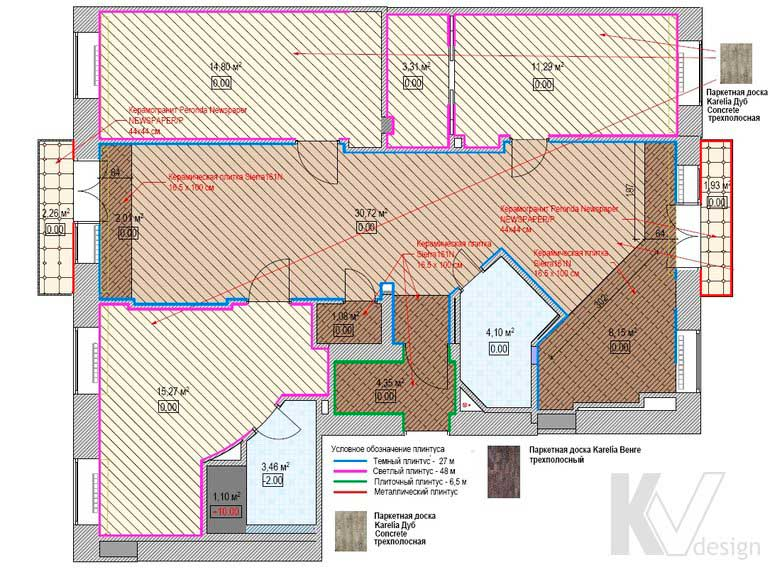

План полов

На цьому кресленні для кожного приміщення відображаються види, кількість і малюнок укладання використовуваних підлогових покриттів, а також наявність і рівні розташування сходинок і подіумів. Крім того, на плані підлог показані лінії переходу між різними покриттями, тип, довжина і розташування плінтусів, а також наявність розділових порогів.
Дизайнер розробляє кілька концептів такого креслення, на основі яких спільно із замовником буде затверджено єдиний підсумковий варіант. Крім цього в обов'язковому порядку виконуються кілька додаткових планів підлог з розкладкою плитки, зазначенням її типу, співвідношення кольорів, малюнка, напрямки і прив'язки початку укладання. Згодом за схваленим замовником плану статей розраховується специфікація підлогових покриттів для проекту.